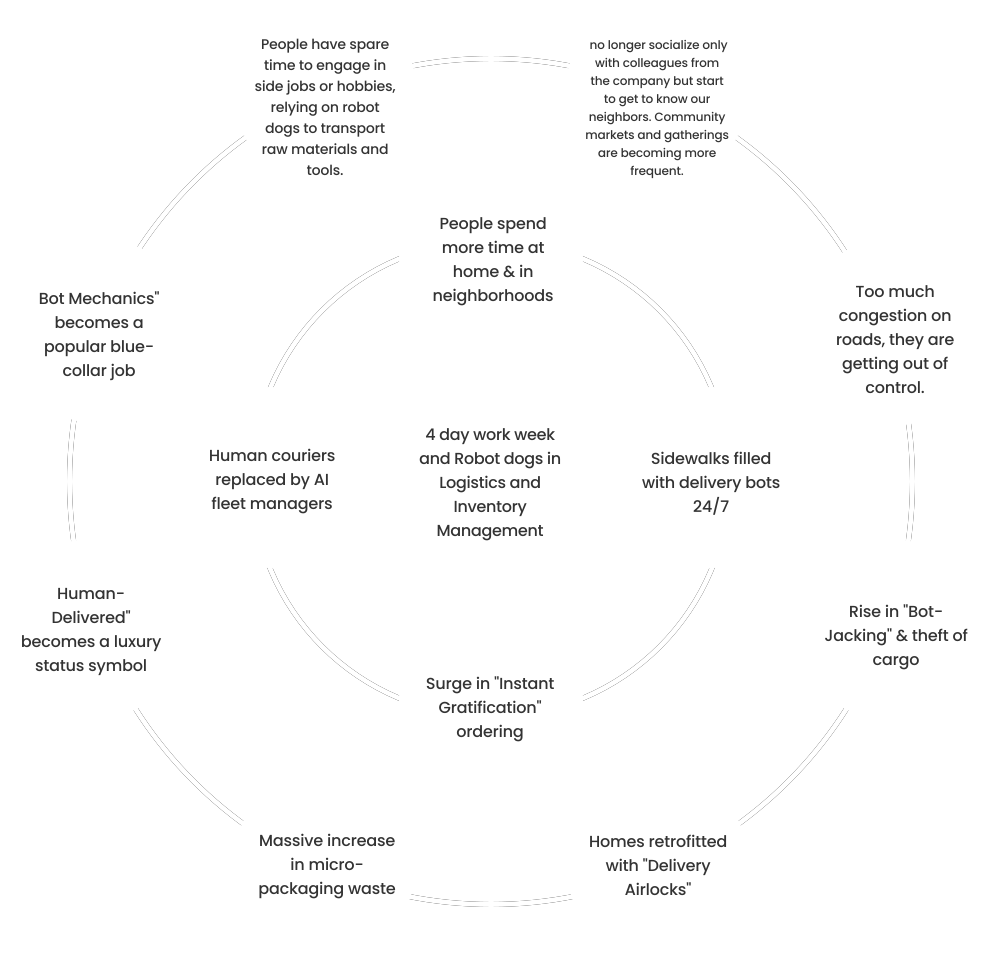

Future Wheel
Click diagram to enlarge 🔍
Process

Click diagram to enlarge 🔍
User Group
Click diagram to enlarge 🔍
Designing Human–Robot Coexistence (2040)
“ By 2040, four-day work weeks mean more life happening in HDB neighborhoods—but also more delivery robots moving through them. ”
In narrow walkways and void decks, everyday routines are disrupted by congestion, safety concerns, and rising tension between people and machines. The challenge isn't just logistics—it's preserving the rhythm of human life.
Void Decks · Lift Lobbies · MRT Edges
“Because most things run smoothly, we definitely work with the best-case scenario and any deviation from that might unsettle us. We don’t “live with” or “tolerate” anything that has not been adequately managed or implemented. And while this may come across as pettiness etc to some, I think it does exemplify a respect for high standards. In that sense, a little Japanese.”